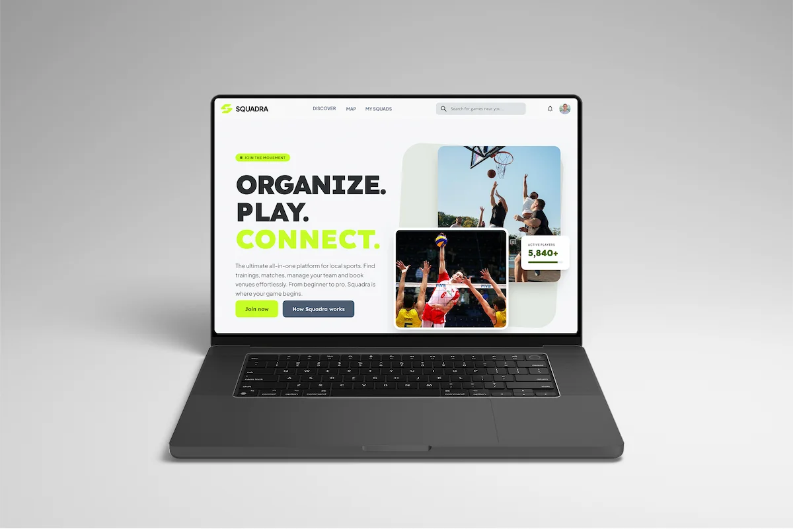
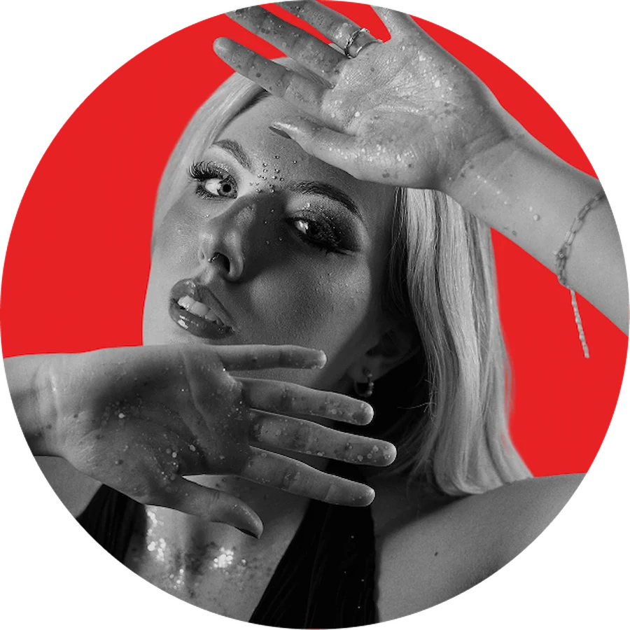

01 / SQUADRA
A platform that helps recreational athletes connect, find teammates or workout buddies, organise games and build their local sports communities.
READ MORE →Based in Budapest, Hungary
UX Designer & Marketer
I design solutions for complex problems.
I'm an interaction designer with 2+ years of experience in UX, digital design and content management, backed by a background in marketing.
When it comes to design, I love taking a step back:


A platform that helps recreational athletes connect, find teammates or workout buddies, organise games and build their local sports communities.
READ MORE →

A redesign of a plant webshop with a new brand identity, clearer navigation, better search and filtering and a simpler way to browse and order online.
READ MORE →

A smart knee band for rehabilitation that uses electrostimulation and motion-tracking sensors to give patients and physiotherapists real-time feedback of movement and measurable results.
READ MORE →Have a project, idea, or opportunity in mind? I'd love to hear about it.
START A CONVERSATIONBudapest, Hungary & Remote worldwide